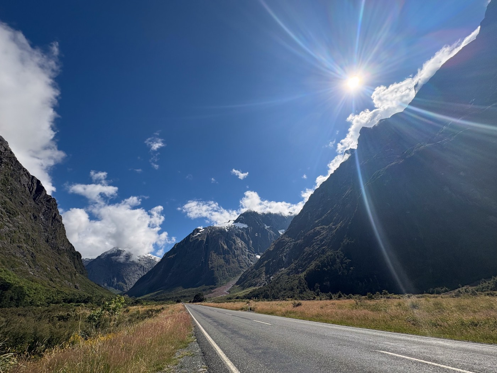
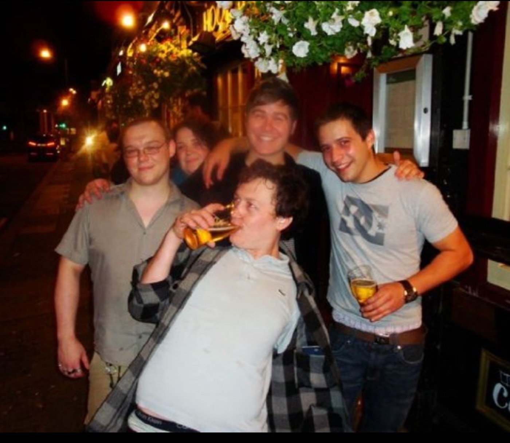
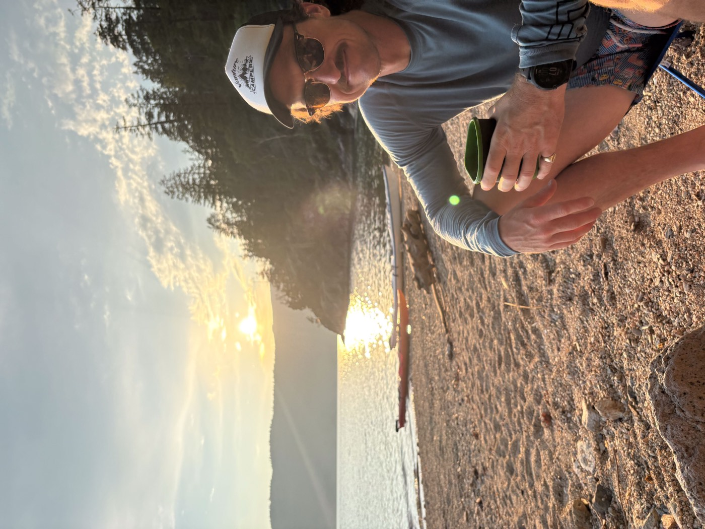
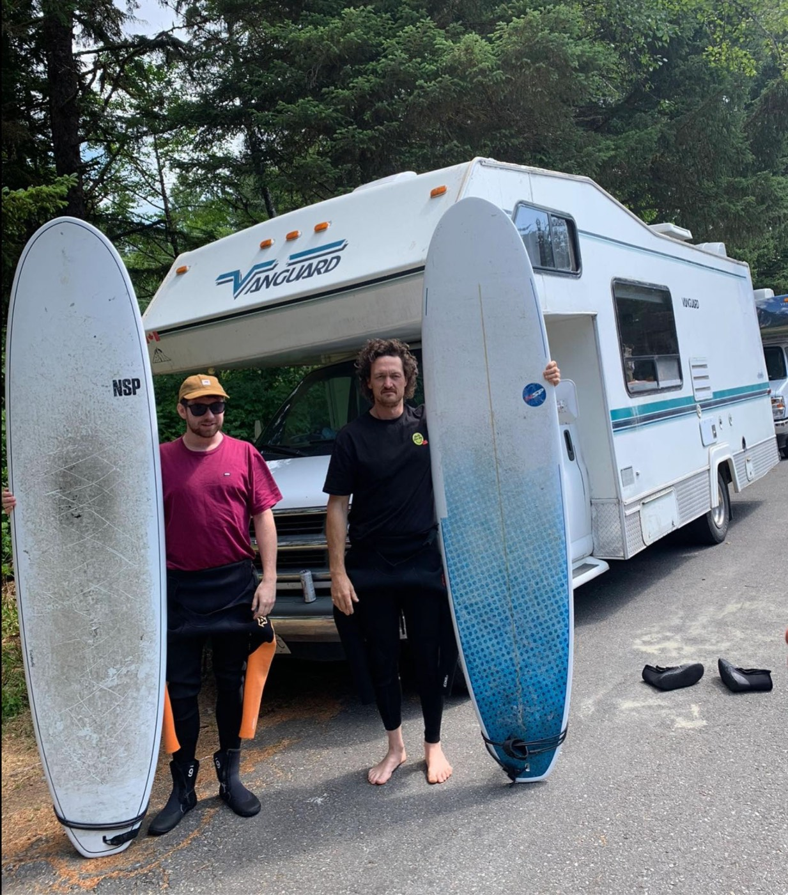
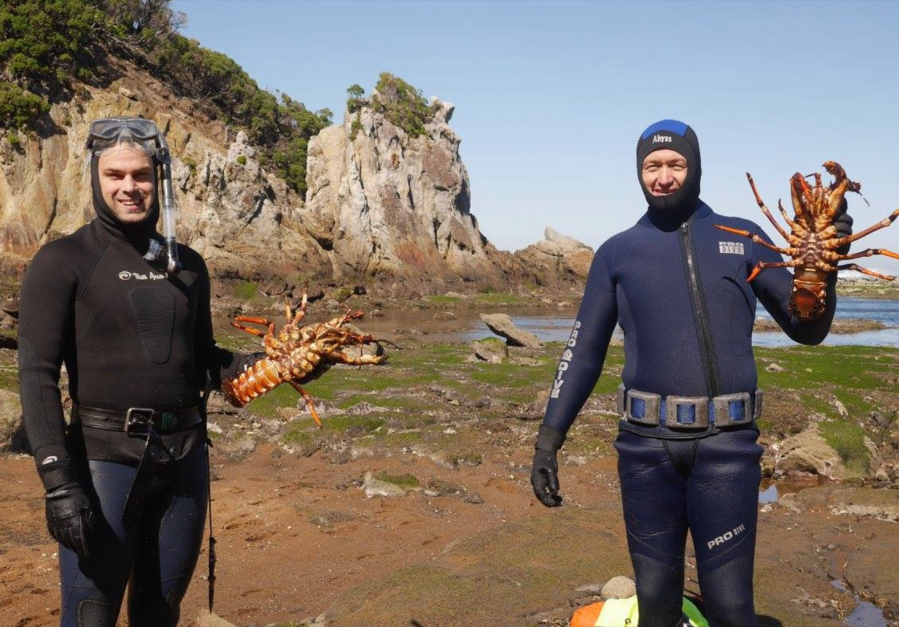

12 years sober, and counting
Sobriety is not a smaller life.
The life I thought I was giving up turned out to be the one I'd never actually had access to.
The Path
Where are you right now?
Recovery happens in stages. What helps on day three is useless in month six, and the other way round. Pick the one that sounds like today and start there.
- 1I'm not sure I have a problemYou haven't decided anything. You're just starting to wonder.
- 2I'm stopping, or about toGet through the first week safely. Nothing else matters yet.
- 3I've stopped. Now what?The physical part is over. This is when going it alone stops working.
- 4I'm sober, but I feel flatThe crisis is over and life feels flat. The body and brain are still healing.
- 5I'm steady. I want moreSobriety was never the goal. The life it makes possible is.
Who is writing this
The site I wish someone had handed me at 22


If you're in your 20s and someone tells you to get sober, it sounds like a life sentence: meetings, decaf, early bedtimes, the end of fun. That was the version I believed too.
I got sober on November 12, 2014, at 29. Since then I've spent ski seasons in Whistler, jumped out of planes, hunted, travelled, started over more than once. None of it would have been possible if I'd kept drinking. Most of it I didn't even know was on the table.
Tools
For the moment you actually need them
Free, no account, and nothing you enter leaves your phone.
Urge Surf
A craving is a wave. This timer gets you over it, then points the energy somewhere.
Ride one outSober Counter
Days, money saved, and what your body is doing at each milestone.
Start countingAm I drinking too much?
Three questions doctors use. Thirty seconds, private, no judgement.
Check inFind Your Room
AA is one option. A six-question quiz to find the kind of support that fits you.
Take the quizFirst Summer · for school leavers
Twelve weeks. Four sports. One thing that's yours.
The summer after school is where the path forks. First Summer is a 12-week programme that points the same intensity that finds drugs and alcohol at something worth getting good at: surf, climbing, combat sports, wheels, sky.
Community
You are not meant to do this alone
Rooms can be daunting when everyone has thirty years on you. Find people your own speed: meetings, crews, clubs and a pact to start with a mate.
Find your peopleThe science
What the research actually says
Lived experience is the voice here. Published evidence is the ground it stands on. Every claim on the site, with its source.
Read the evidenceDaily
Today's reading
A short reading, three affirmations and a line of gratitude, one for every day of the year.
Read today's



The last drink feels like the end of it. It's the start.